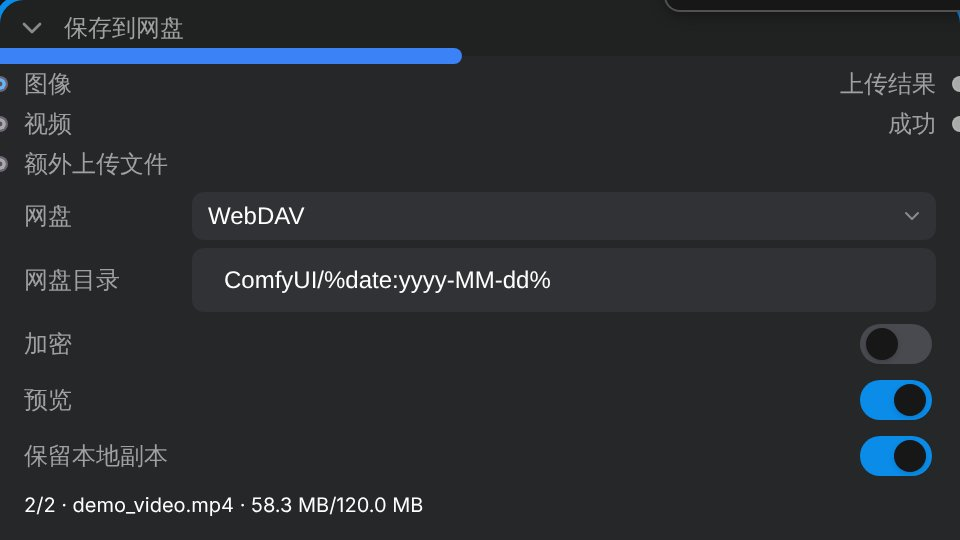
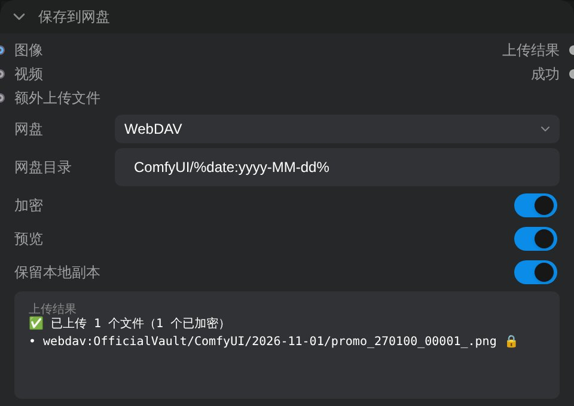

ComfyUI SnackNodes
Save to Cloud Drive · 保存到网盘
把 ComfyUI 生成的图片和视频直接存进你自己的网盘，可选端到端加密。适合在 AutoDL 等云端 GPU 上运行 ComfyUI 的个人用户。
Save the images and videos you generate in ComfyUI straight to your own Google Drive or WebDAV storage, optionally end-to-end encrypted.
功能 / Features
WebDAV 覆盖坚果云、Nextcloud、NAS、OpenList。
WebDAV covers Nutstore, Nextcloud, NAS, OpenList.
Cryptomator 保险库格式，官方 App 直接打开。
Cryptomator vault format; open with the official app.
默认 ComfyUI/%date:yyyy-MM-dd%
实时进度；同名文件自动改名。
Live progress; existing files are never overwritten.
「成功」布尔输出，可选失败时不中断。
A success output; optionally keep going on failure.
凭据不写进工作流，分享工作流也安全。
Credentials never go into workflows.
界面 / Screenshots


Google 用户数据的使用 / How Google user data is used
授权 Google Drive 时，本工具只申请 drive.file 权限：只能看到和修改它自己创建的文件和文件夹，用于把你选择保存的文件上传到你自己的 Google Drive。它读不到你 Drive 里的其他任何内容。工具完全在你运行 ComfyUI 的机器上运行，开发者没有服务器，收不到你的任何数据。
When you authorize Google Drive, the app requests only the drive.file scope: it can see and change only the files and folders it created itself, and uses this solely to upload the files you choose to save into your own Google Drive. It cannot read anything else in your Drive. The app runs entirely on the machine where you run ComfyUI; the developers operate no servers and receive no data. Details: Privacy Policy.
开始使用 / Get started
在 ComfyUI Manager 中搜索 snacknodes，或者手动安装：Search for snacknodes in ComfyUI Manager, or install manually:
cd ComfyUI/custom_nodes git clone https://github.com/svbmwjwj/comfyui_snacknodes pip install -r comfyui_snacknodes/requirements.txt # 授权一次 / authorize once (from the ComfyUI folder) python custom_nodes/comfyui_snacknodes/auth.py google_drive
完整说明见 README。Full documentation: README.